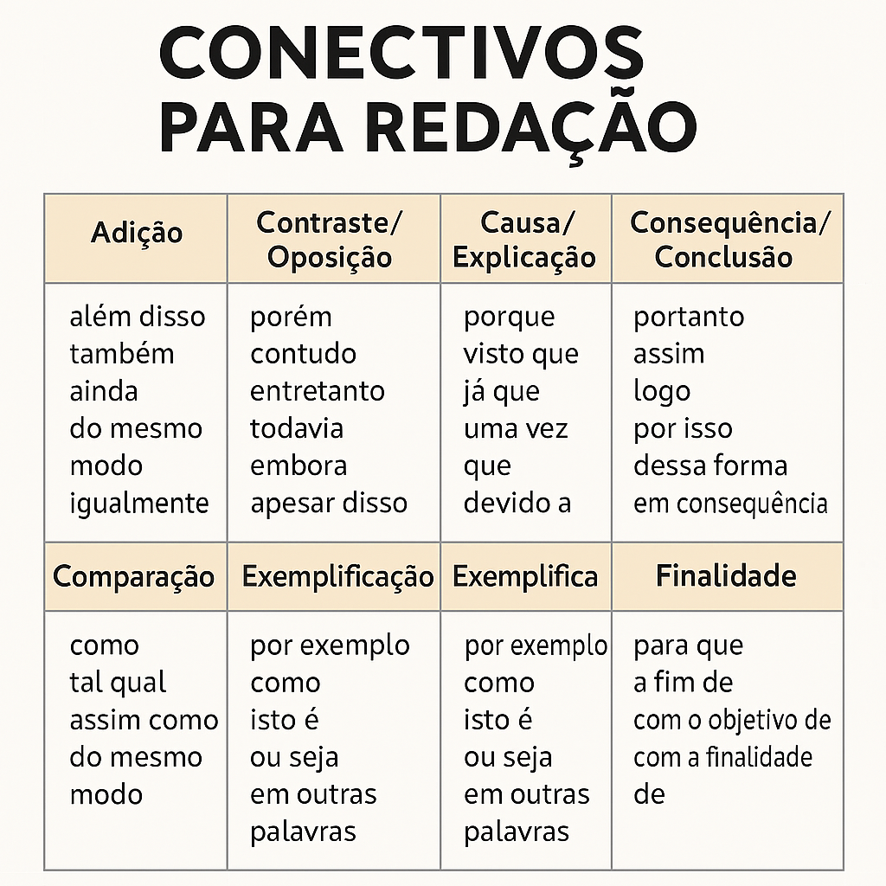
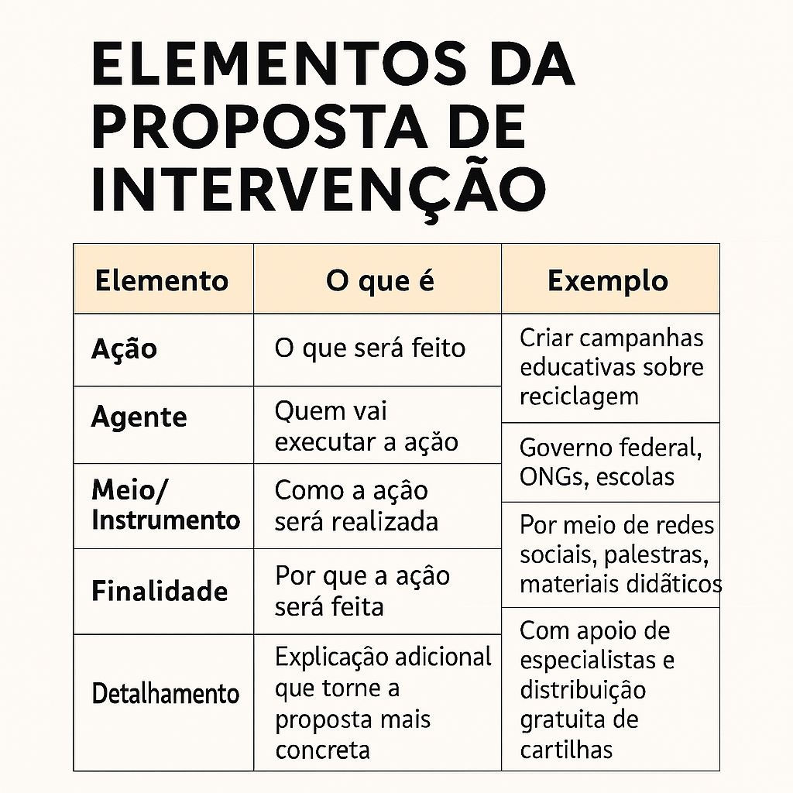

Tópicos a serem estudados
Estrutura
1. Introdução
- Apresenta o tema que será discutido.
- Deve trazer uma tese (ponto de vista ou posicionamento do autor sobre o assunto).
- Geralmente é um parágrafo curto, que contextualiza e delimita o problema.
Exemplo: “A violência urbana no Brasil é um desafio que exige políticas públicas eficazes e participação da sociedade.”
2. Desenvolvimento
- Normalmente 2 ou 3 parágrafos.
- Cada parágrafo deve conter um argumento principal que sustente a tese.
- Os argumentos podem se apoiar em:
- Dados estatísticos, exemplos históricos e comparações.
- Citações de autoridades ou documentos
é essencial manter coesão (ligação entre frases e parágrafos) e coerência (sentido lógico).
Exemplo: “Segundo dados do IBGE, o crescimento desordenado das cidades contribui para o aumento da violência, pois amplia desigualdades sociais e dificulta o acesso a serviços básicos.”
3. Conclusão
- Retoma a tese apresentada na introdução.
- Resume os principais argumentos.
- Apresenta uma proposta de intervenção (no caso do ENEM), que deve ser, clara, detalhada, viável e respeitando os direitos humanos.
- A deve fazer B, através de C para que X (argumento '1') e Y (argumento '2') sejam resolvidos.
Exemplo:“Portanto, para reduzir a violência urbana, é necessário que o Estado invista em educação e políticas sociais, além de promover campanhas de conscientização que envolvam a comunidade.”
Resumindo
- Introdução ? apresenta o tema e a tese.
- Desenvolvimento ? defende a tese com argumentos.
- Conclusão ? reafirma a tese e propõe solução (quando exigido).
Competências do Enem (1 a 5)
- Domínio da norma culta da Língua Portuguesa
- Compreensão da proposta e aplicação de conhecimentos
- Seleção e organização de argumentos
- Coesão e coerência
- Proposta de intervenção
Repertório sociocultural
- o conjunto de conhecimentos, referncias e exemplos que voc utiliza para enriquecer seus argumentos. Pode vir de:
- Histria ? Revoluo Industrial, Ditadura Militar, Segunda Guerra Mundial.
- Filosofia e Sociologia ? ideias de Plato, Aristteles, Marx, Durkheim, Foucault.
- Literatura e Artes ? obras como Vidas Secas (Graciliano Ramos), 1984 (George Orwell), msicas, filmes.
- Cincia e Tecnologia ? avanos cientficos, descobertas, impactos da internet.
- Atualidades ? dados estatísticos, notícias, relatórios da ONU, IBGE, OMS.
Conectivos

Proposta de interveno
O que ser feito, quem far, como ser feito ,por que ser feito e detalhes que tornam a ideia vivel e concreta.

Exemplo:
Desafios da preservao ambiental no Brasil
Para enfrentar os desafios da preservao ambiental, necessrio que o governo federal promova campanhas educativas em escolas e mdias digitais, com o apoio de ONGs e especialistas, a fim de conscientizar a populacao sobre prticas sustentveis, como reciclagem e consumo consciente. Essas aes devem ser acompanhadas da distribuio de materiais informativos e da capacitao de professores, garantindo que o contedo seja acessvel e eficaz
Temas de redao para treinar
- A importncia da educao na formao do indivduo.
- Os desafios do meio ambiente e a sustentabilidade.
- O impacto das redes sociais na sociedade contempornea.
- Desigualdade social e suas consequncias.
- A influncia da tecnologia no cotidiano das pessoas.
- O papel da cultura na construo da identidade nacional.
- Sade mental: desafios e solues na sociedade atual.
- A globalizao e seus efeitos nas relaes internacionais.
- O combate violncia urbana nas grandes cidades.
- A importncia do esporte para a sade e o bem-estar.
A prtica leva perfeio. Quanto mais voc pratica, melhor voc se torna em redao.
Simulados e Reviso